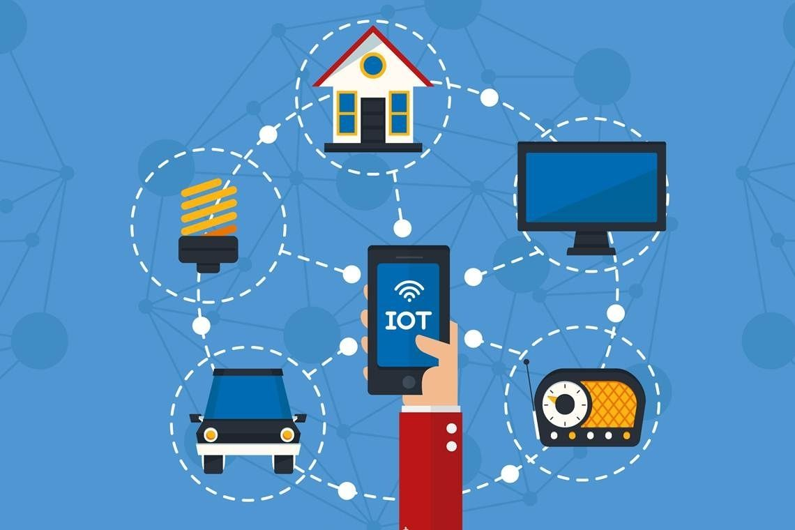
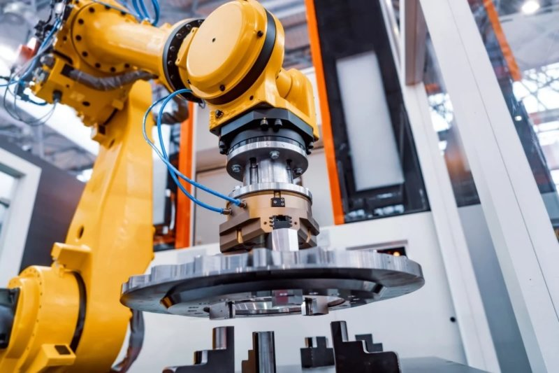
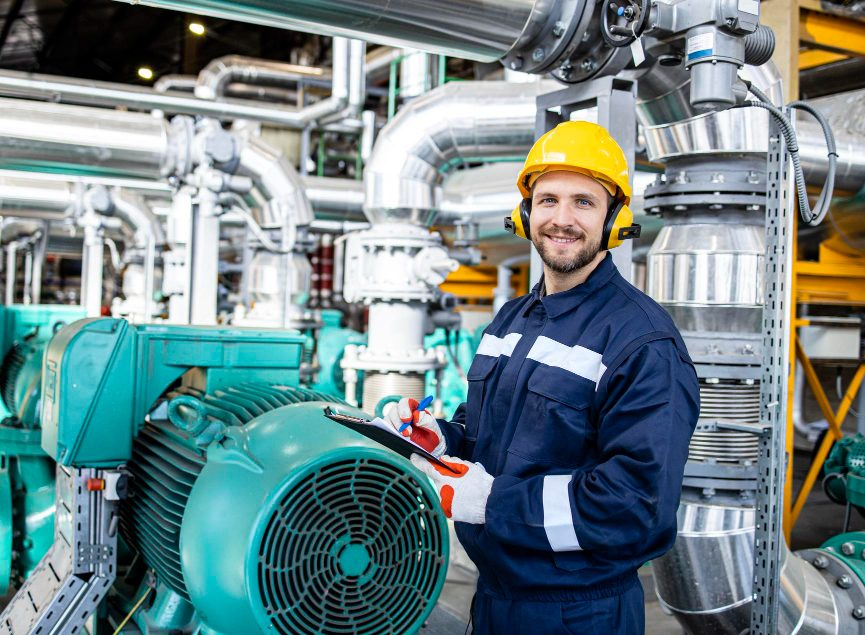
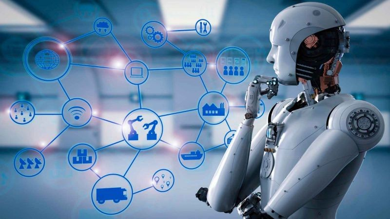
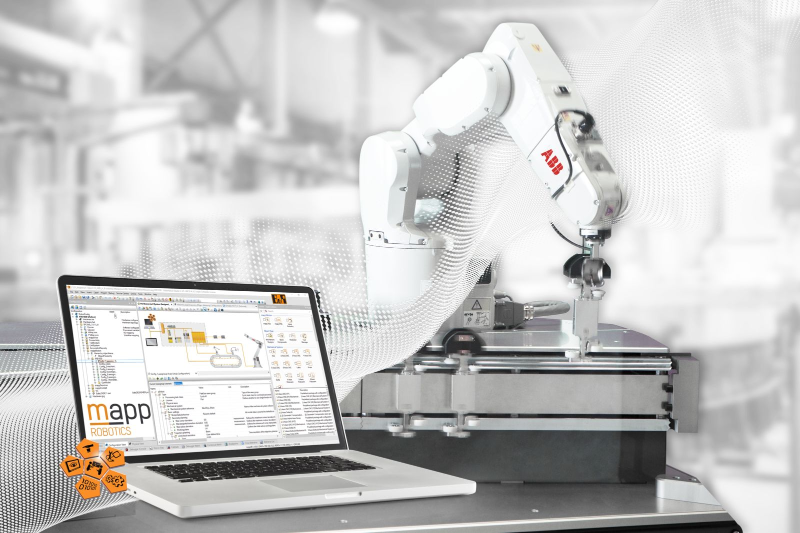
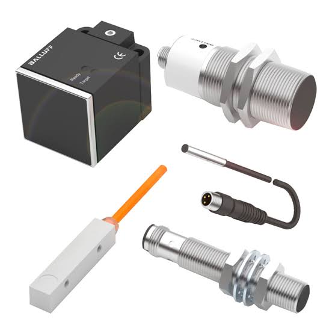
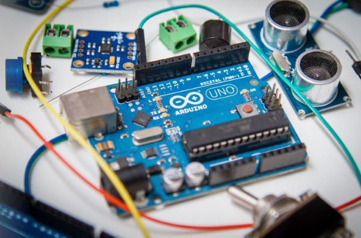

Os Conceitos Essenciais
Internet das Coisas
A Internet das Coisas (IoT) é a rede de objetos físicos incorporados a sensores, softwares e tecnologias de conexão. Esses itens trocam dados entre si e com sistemas na nuvem através da internet, permitindo que eletrodomésticos, veículos e máquinas ajam de forma inteligente e autônoma, sem intervenção humana direta.
A mecânica da IoT se baseia em quatro pilares fundamentais:
Coleta: Sensores campturam dados do ambiente
Comunicação: As informações são enviadas para a nuvem usando redes como Wi-Fi, Bluetooth ou 5G
Processamento: Softwares analisam os dados recebidos
Ação: O dispositivo responde inteligentemente, como acionar o ar-condicionado ao notar que alguém entrou no quarto.

Robótica Industrial
A robótica industrial é a aplicação de máquinas automatizadas e programáveis (robôs) em linhas de produção. Essas máquinas executam tarefas repetitivas, precisas ou perigosas. por exemplo: soldagem, pintura, montagem e embalagem—com alta eficiência, transformando os processos fabris.
Um robô industrial, segundo a International Federation of Robotics (IFR), é um manipulador multifuncional, reprogramável e controlado automaticamente, que opera em três ou mais eixos.
Isso leva à vantagens como: maior eficiência, com os robôs operando continuamente com repetibilidade e precisão; segurança aprimeorada, retirando humanos de ambientes insalubres e evitando acidentes / exposição a riscos / esforço extremo; além de reduzir significativamente a margem de erro na fabricação.

A importância da automação industrial

A automação industrial é essencial para a competividade moderna. Ela eleva a produtividade, reduz custos operacionais, e previne falhas. Ao substituir o trabalho manual em tarefas repetitivas e perigosas, a tecnologia protege os operadores e permite que as equipes foquem em atividades mais estratégicas.
Os impactos da automação incluem:
Aumento da eficiência: Eleva a produtividade e garante repetibilidade e padronização dos produtos
Segurança aprimorada: Retira os profissionais de zonas de risco e reduz o envolvimento humano em ambientes insalubres
Redução de custos: Diminui o desperdício de matéria-prima, otimiza o consumo de energia e reduz o tempo de inatividade
Controle e monitoramento: Permite a análise de dados em tempo real e a gestão preditiva de falhas.
A relação entre robótica e a Internet das Coisas (IoT)
A relação entre a robótica e a Internet das Coisas dá origem ao conceito de Internet das Coisas Robóticas (IoRT). Enquanto a IoT fornece conectividade e coleta dados do mundo físico usando sensores, a robótica fornece o hardware e os atuadores para interagir físicamente com esse ambiente, automatizando tarefas de forma inteligente e autônoma.
Sensores coletam dados em tempo real, depois sistemas de computação em nuvem analisam essas informações de forma a prever falhar, onde volta para os robôs, os quais recebem instruções e executam ações físicas precisas, como movimentar peças, limpar superfícies, ou realizar manutenção.

Como acontece a conexão?
Os robôs integram-se às redes industriais por meio de placas de rede dedicadas ou módulos de comunicação embarcados. Eles atuam como dispositivos ativos na rede (nós), operando protocolos em tempo real para controle de movimento (como o Profinet) ou protocolos semânticos e de nuvem (como o MQTT e OPC UA)
A integração acontece de acordo com as necessidades de cada camada da automação. Por exemplo, a Ethernet Industrial e Profinet são utilizadas para controle determinístico e em tempo real. O robô recebe e transmite sinais de segurança e ordens de movimentos em milissegundos, interagindo diretamente com CLPs (Controles Lógicos Programáveis), inversores e sensores; O OPC UA é projetado para a troca segura de dados estruturados. O robô atua como um servidor, fornecendo metadados e informações de diagnóstico (ex.: torque, velocidade, status de falha) para sistemas SCADA e MES de forma padronizada e independente da fabricante; E o MQTT, como é focado no envio leve de dados, o robô publica informações operacionais em um broker para monitoramento remoto, dashboards em nuvem ou algoritmos de Inteigência Artificial sem sobrecarregar a rede.

Introdução aos Sensores
O que é um sensor?
O sensoriamento é o ato ou processo de detectar, medir e coletar dados sobre um objeto, ambiente ou fenômeno físico por meio de dispositivos chamados sensores, sem que haja necessidade de contato físico direto. Eles transformam grandezas físicas ou químicas (como temperatura, pressão, nível e posição) em sinais elétricos interpretáveis por controladores. Sem eles, as máquinas não teriam percepção do ambiente, tornando o controle em tempo real, a eficiência e a segurança das fábricas impossíveis.
A relação entre sensores, comunicação de dados e controle de processos forma o ciclo básico da automação industrial. Os sensores medem variáveis físicas do ambiente. A comunicação de dados transporta essas informações rapidamente. O sistema de controle processa tudo e ajusta as máquinas para manter a produção segura e estável.

Introdução ao Arduíno

O Arduino é uma plataforma de prototipagem eletrônica de código aberto (open-source) composta por hardware (uma placa com microcontrolador) e software (ambiente de desenvolvimento ou IDE), criada para facilitar a criação de projetos de automação, robótica e internet das coisas (IoT) por amadores e profissionais. A placa recebe informações do mundo físico por meio de sensores, o microcontrolador analisa esses dados usando as regras que você programou, e o sistema executa uma ação, como acender uma luz, girar um motor ou emitir um som.
Seu hardware é composto por pinos digitais, lendo e enviando dados apenas em ligado/desligado (0 ou 1), pinos analógicos que medem uma faixa contínua de valores de tensão (como a variação detectada por um sensor de luz ou temperatura). O software é feito por código usando o programa oficial do Arduino, e envia essa programação para a placa via USB. O código gravado fica salvo na memória interna do microcontrolador e roda de forma autônoma.
Veja mais em: Sensores